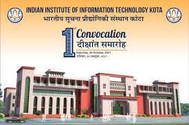
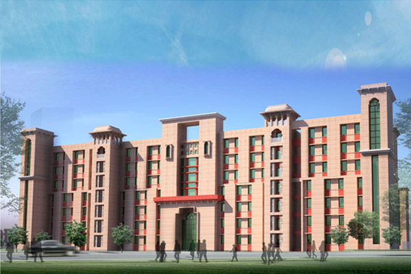
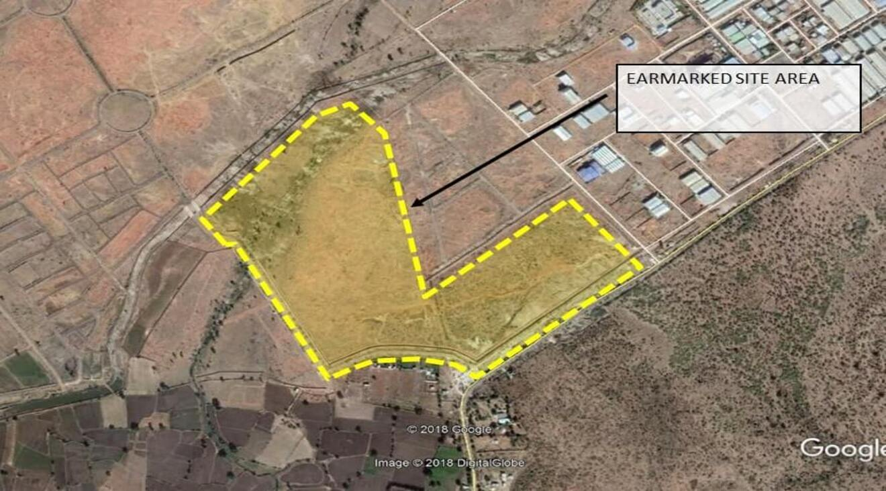

Indian Institute of Information Technology, Kota (IIIT, Kota) is an institute of national importance. IIIT Kota is a joint venture of the Ministry of Education (MoE) Govt. of India and Govt. of Rajasthan with Industry Partners in Public-Private-Partnership (PPP) model. IIIT Kota was established in 2013. Currently, the institute is mentored by Malaviya National Institute of Technology Jaipur (MNIT Jaipur) and is situated at MNIT Jaipur. The main site of IIIT, Kota shall be constructed at Ranpur near Kota on 100.37 acres of land made available by the Govt. of Rajasthan.
  Characterised by a tradition of creating a center for imparting technical education of international standards, we are committed to excellence in education, to innovative practice and to the concept of lifelong learning.The Indian Institute of Information Technology Kota, deemed to be a Institute of National Importance, was established in 2013 with a vision to contribute the IT world through education and research, entrepreneurship and innovation. Kota is a joint venture of the Ministry of Education (MoE) Govt. of India and Govt. of Rajasthan with Industry Partners in Public-Private-Partnership (PPP) mode. Currently the institute is mentored by Malaviya National Institute of Technology Jaipur (MNIT Jaipur) and situated at MNIT Jaipur. The main site of IIIT, Kota shall be constructed at Ranpur near Kota on 100.37 acres of land made available by the Govt. of Rajasthan. The institute is governed by the eminent personalities of the Government, Industry and Academia.
| BRANCH | MAXIMUM PAKAGE | AVERAGE PAKAGE | PLACEMENT% |
|---|---|---|---|
| CSE | 82 LPA | 15.6 LPA | 94.85% |
| ECE | 63 LPA | 12.9 LPA | 80.95% |
| TOTAL | 82 LPA | 14.9 LPA | 90.65% |